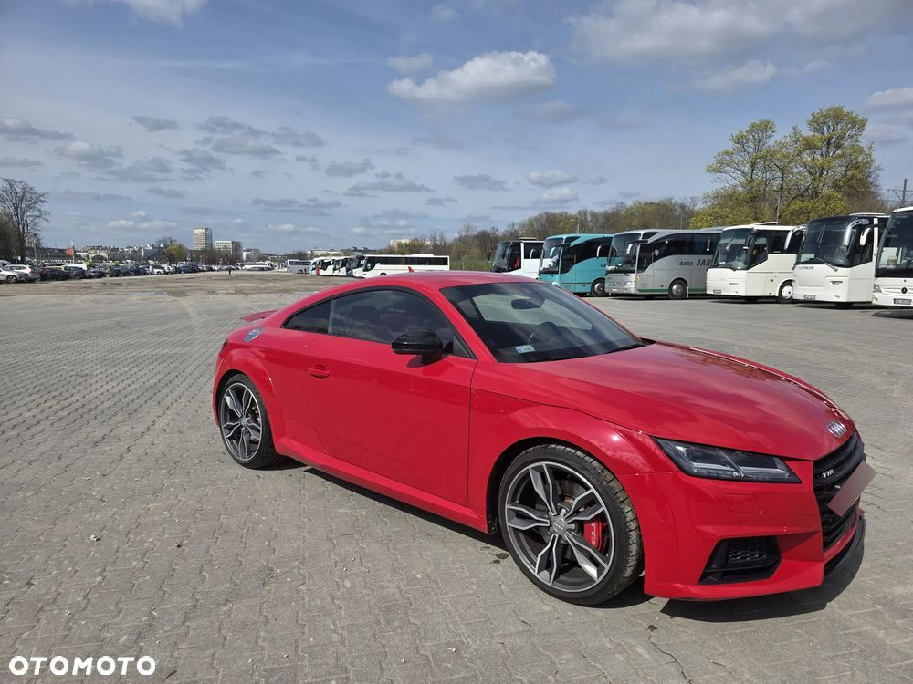
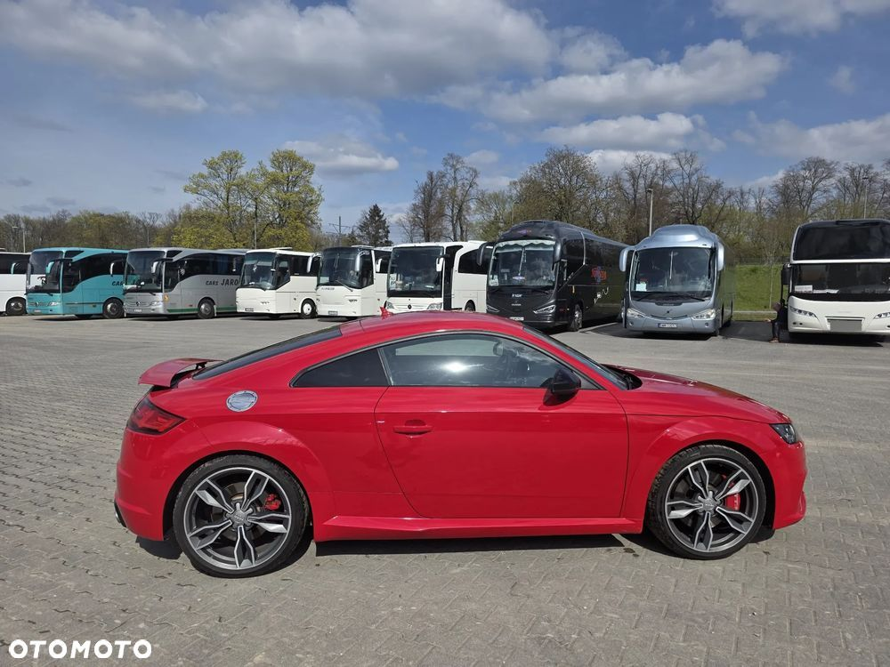
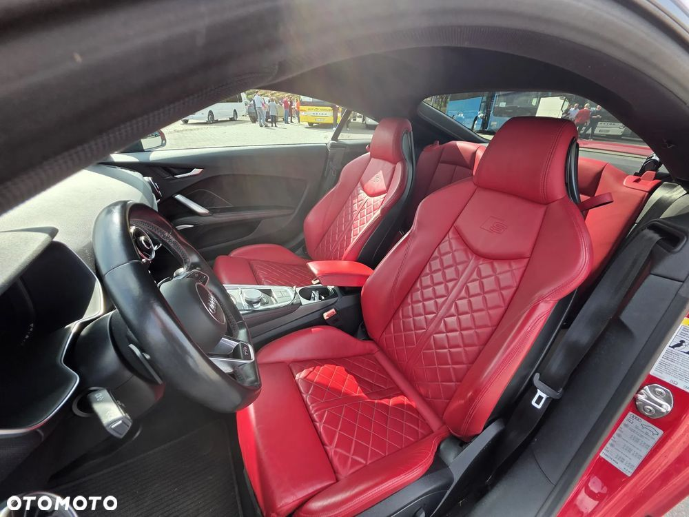
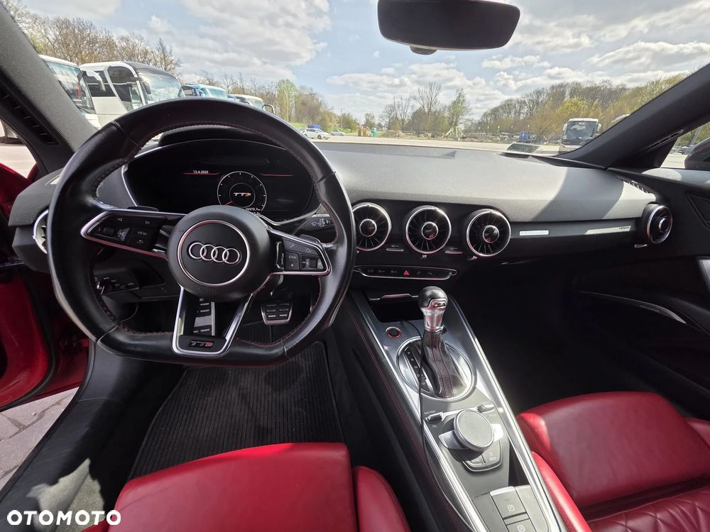
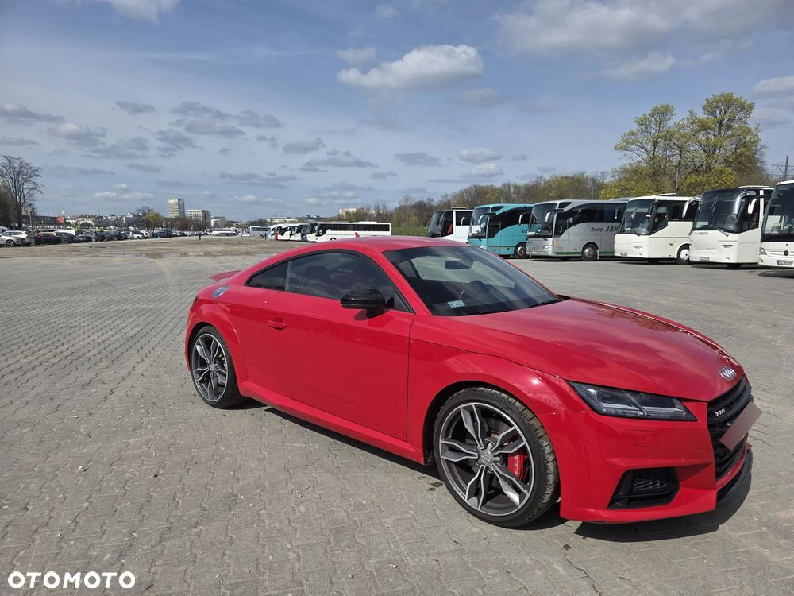
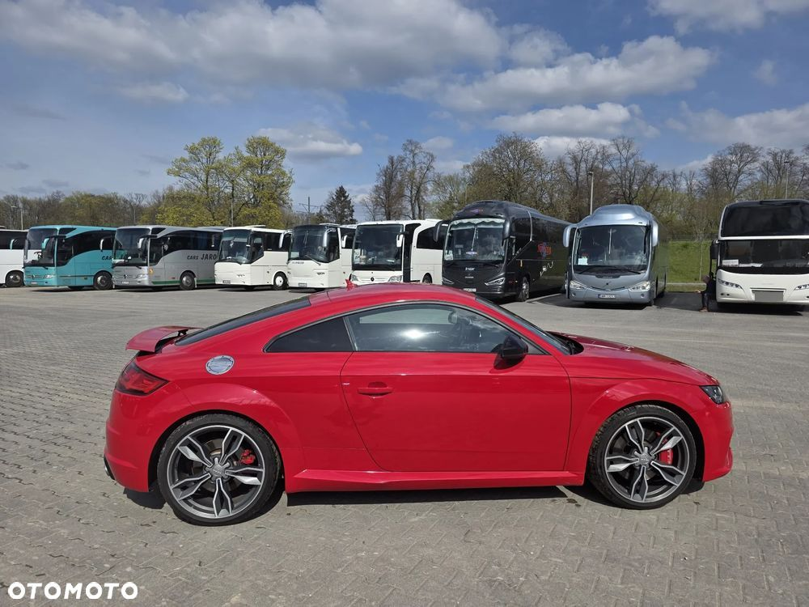
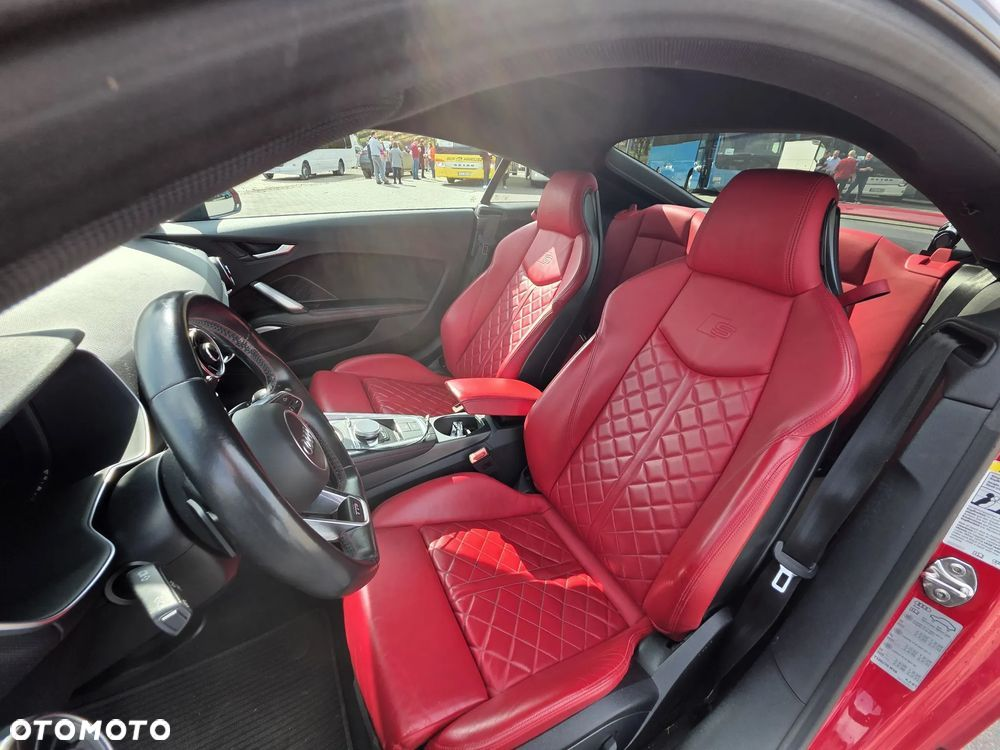
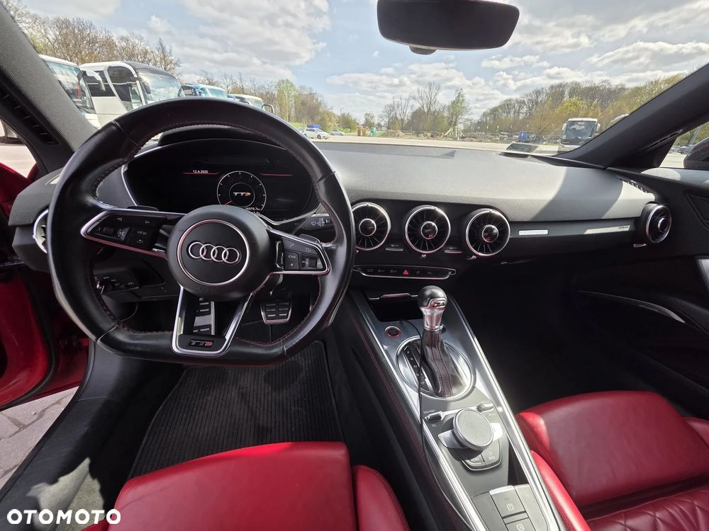

Audi TTS 2.0 TFSI quattro S tronic | 2016 | 1. właściciel | ASO
Lokalizacja: Warszawa
Najważniejsze informacje:
Rok produkcji: 2016
Silnik: 2.0 TFSI quattro S tronic, 310 KM
Średnie spalanie (miasto): 8,4 l/100 km
Napęd: quattro (4x4)
Skrzynia: automatyczna S tronic
Kolor nadwozia: czerwony Tango metalik
Pierwszy właściciel od nowości
Serwisowany wyłącznie w ASO
Garażowany, regularnie myty
Wnętrze i wykończenie:
Tapicerka skórzana Feinnappa z tłoczeniem S line
Siedzenia: czerwone Express
Deska rozdzielcza: czarna
Wykładzina i podsufitka: czarna
Aplikacje dekoracyjne z matowego aluminium
Lakierowane elementy wnętrza w kolorze kwarcowy antracyt
Listwy progowe aluminiowe z emblematem "S"
Pakiet optyczny wnętrza z aluminiowymi aplikacjami ze stali szlachetnej
Sportowa, trójramienna kierownica spłaszczona u dołu, obszyta skórą, z manetkami
Wyposażenie dodatkowe:
Systemy wspomagania jazdy:
Audi Side Assist – asystent martwego pola
Audi Parking System+ – czujniki przód i tył + wizualizacja na ekranie
Kamera cofania + czujnik odległości
Asystent świateł drogowych
Auto Hold – asystent ruszania na wzniesieniu
Autoalarm fabryczny + kluczyk komfortowy Advanced Key
Komfort i multimedia:
MMI Navigation Plus z MMI Touch + Android Auto
Audi Connect – łączność z internetem
System nagłośnienia Bang & Olufsen
Klimatyzacja automatyczna
Ogrzewane fotele sportowe S-line
Regulacja podparcia odcinka lędźwiowego
Oświetlenie i design:
Reflektory LED
Pakiet oświetlenia wnętrza LED
Lusterka zewnętrzne elektrycznie składane, podgrzewane, z funkcją autościemniania
Lusterko wewnętrzne z czujnikiem deszczu i świateł
Pakiet Czerń – czarne detale stylistyczne
Felgi i zawieszenie:
Letnie felgi: 19” 5-ramienne z oponami 245/35 R19
Zimowe felgi: 18” V-design ze stopów lekkich
Zawieszenie Audi Magnetic Ride – adaptacyjne tłumienie
Czerwone zaciski hamulców
Sportowe dodatki:
Wysuwany tylny spoiler
Układ wydechowy strzelający przy zmianie biegów
Dodatkowe informacje:
Auto w 100% bezwypadkowe
Serwisowane tylko w ASO – pełna historia serwisowa
Możliwość sprawdzenia auta na dowolnej stacji diagnostycznej
Kontakt:
Samochód gotowy do jazdy. Idealny dla osób szukających sportowych emocji i prestiżowego designu.
 
